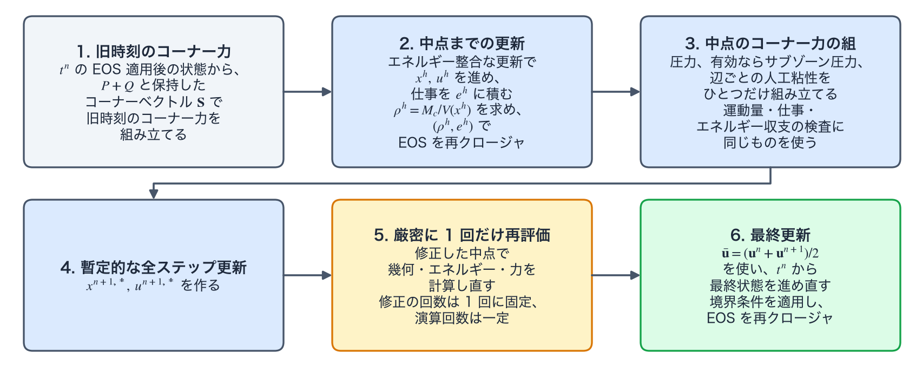

時間積分
流体は、演算子の列の中で半ステップ演算子として実行される。この頁は、1D の積分器（legacy_pc、midpoint_v2）と 2D RZ の積分器（midpoint_v1、pc_v0）の違い、midpoint_v1 による流体半ステップ 1 回の手順、手順の前にドライバが選ぶ時間刻みの候補とメッシュ品質の判定を述べる。
時間積分
ドライバのレベルでは、流体は「レーザー全ステップ → 流体半ステップ → 熱伝導全ステップ → 輻射全ステップ → 流体半ステップ」という既定の順序に組み込まれた半ステップ演算子である。各流体半ステップは、その半区間に対して選択した積分器の 1 サイクルを完全に実行し、後続の演算子が状態を読む前に EOS を再クロージャする。積分器は、この半区間を自分の 1 ステップとして進める。以下では、その区間の中央を中点（midpoint）、区間の全体を進める更新を全ステップ更新と呼ぶ。
1D の積分器は、2D の time_integration とは別のキー Numerics.hydro.time_integrator で選ぶ。省略したときの既定は legacy_pc で、従来の予測子–修正子法である。この方法は、予測段（predictor stage）でエネルギーを進めず、エネルギーの仕事に \((P^n+P^{n+1/2})/2\) の平均圧力を使うので、エネルギーの更新は時間 1 次である。midpoint_v2 は、予測段でエネルギーも中点へ進め、エネルギーの仕事に中点の圧力と人工粘性を直接使う 2 次の中点法で、1D 専用である。2D RZ で midpoint_v2 を指定すると、入力検証が拒否する。
2D RZ の pc_v0 は、time_integration のキーがなかった時代の凍結設定を再現するために残してある。このキーを持たない凍結設定は pc_v0 として読まれる。pc_v0 は、旧時刻の力から中点の位置と速度を予測し、中点での幾何と力を評価して、全ステップ更新を修正する。予測段階で内部エネルギーを進めないため、圧縮中の圧力クロージャが古いままとなり、滑らかな流れの時間収束では約 1 次と測定されている。
midpoint_v1（単一ブロックメッシュの既定）は、中点までのエネルギー整合な仕事を行い、中点の幾何から厳密に \(\rho^h=M_c/V(x^h)\) を求め、\((\rho^h,e^h)\) で EOS を再クロージャする。運動量、仕事、エネルギー収支の検査はひとつの中点コーナー力の組を共有する。暫定的な全ステップ更新のあと、修正した中点で力を厳密に 1 回だけ、決定論的に再評価する。最終状態はあらためて \(t^n\) から進め、\(\bar{\mathbf u}=(\mathbf u^n+\mathbf u^{n+1})/2\) を使う。滑らかな流れでの精度次数の測定値（2026-07-27、検証デッキ 2d_rz_v3_smooth_temporal による）は \(p_\rho=2.0000\)、\(p_e=1.9999\) で、pc_v0 は約 1.0007 である。マルチブロックメッシュ（接続関係を CSR、compressed sparse row 形式で保持する）では、time_integration を省略すると pc_v0 になり、midpoint_v1 を明示すると中点法が使える。ただし、マルチブロックの中点法では、av_model="scalar_vnr_legacy" と state_supply の境界を入力検証が拒否する。また、混合セル（mixed cell。複数の材料が共存するセル）の圧力緩和（pressure relaxation、Numerics.materials.mixed_cell_closure="pressure_relaxation"。時間刻み制御の頁に述べた）は中点の段をもたないので、midpoint_v1 との組を入力検証が拒否する。HLLC（Harten–Lax–van Leer-contact 近似リーマン解法、approximate Riemann solver）の経路と中心ボタン（center button） — 極中心を組み立てた「ボタン」メッシュ — の経路は、time_integration の値によらず pc_v0 のままである。なお 2 ランク以上の MPI（Message Passing Interface）ではドライバが midpoint_v1 を明示的に拒否するため、複数ランクの 2D デッキでは pc_v0 を指定する必要がある（MPI ページ参照）。

midpoint_v1）。箱の番号は手順の番号に対応する。上段は旧時刻の力から中点までの更新と中点の力の組、下段は暫定的な全ステップ更新、橙の箱の再評価、緑の箱の最終更新である。再評価は修正した中点で厳密に 1 回行い、修正の回数は 1 回に固定される。最終状態は \(t^n\) からあらためて進める。模式図であり、数値は含まない。流体半ステップ 1 回（midpoint_v1）の手順
手順の流れを図Aに示す。
- \(t^n\) における EOS 適用後の状態から始め、\(P+Q\) と保持しておいたコーナーベクトル \(\mathbf S\) から旧時刻のコーナー力を組み立てる。
- エネルギー整合な更新として中点の位置と速度 \(x^h,u^h\) を進め、中点までの力の仕事を \(e^h\) に積み上げ、中点の幾何から厳密な密度 \(\rho^h=M_c/V(x^h)\) を求め、\((\rho^h,e^h)\) で EOS を再クロージャする。
- 中点でのコーナー力の組 — 圧力、有効化されていればサブゾーン圧力、別配列に置く辺ごとの人工粘性 — をひとつだけ組み立て、運動量にも仕事にもエネルギー収支の検査にも同じものを使う。
- 暫定的な全ステップ更新 \(x^{n+1,*},u^{n+1,*}\) を作る。
- 厳密に 1 回だけ再評価する。修正した中点で幾何、エネルギー、力を計算し直す。これで修正の回数は 1 回に固定され、演算回数が一定になる。
- \(\bar{\mathbf u}=(\mathbf u^n+\mathbf u^{n+1})/2\) を使って \(t^n\) から最終状態をあらためて進め、境界条件を適用し、EOS を再クロージャする。
ドライバはこのサイクルに入る前に、候補となる時間刻みを選ぶ。流体の CFL（Courant–Friedrichs–Lewy）条件は \(\Delta l_c/(|\mathbf u_c|+c_{s,c})\) を含み、\(\Delta l_c\) は 2D の既定（Numerics.dt.cfl_length_2d="sqrt_area"）で \(\sqrt{A_c}\)、"min_altitude" ではセルの最小高さに基づく長さである。2D RZ には、位置を確定する前に候補の状態を検査するメッシュ品質の判定があり、いずれも既定では無効である。検査する量は、コーナーヤコビアン（corner Jacobian）、ガウス点ヤコビアン（Gauss-point Jacobian）、回転体体積、軸マージン（axis margin）で、許容性の判定（admissibility check）に使う。下限を割り込むと予測されるとき、判定は時間刻みを縮めるか、位置を確定せずに候補の状態を棄却する。主な 3 つを次に挙げる。ほかは時間刻み制御の頁に一覧がある。
mesh_quality_dt_cfl_enabled：中点の位置と最終の位置を確定する前に、現在の節点速度で位置を直線的に進めた候補の軌道上で、検査する量が下限を割り込む最初の位置を求める。割り込むときは、位置を確定せずに失敗を返し、縮めた時間刻みを提案する。提案する時間刻みは、その段の時間刻みに、下限を守れる軌道の割合と安全率mesh_quality_dt_safety_alpha（既定 0.5）を掛けたものである。下限は、ステップの始めの値に対する比で、既定は \(10^{-8}\) である。corner_j_predict_cfl_enabled：コーナーヤコビアンが 1 ステップで縮む割合をcorner_j_predict_max_shrink（既定 0.25）以下に抑えるように、時間刻みを制限する。multiblock_cart_core_polar_shellのメッシュだけで働き、ほかのメッシュでは警告を出して何もしない。in_hydro_corner_j_guard_enabled、in_hydro_gauss_j_guard_enabled、in_hydro_rz_volume_guard_enabled：候補の節点位置を、幾何を更新する前に検査する。
圧力による \(p\,dV\) の仕事、サブゾーン圧力の仕事、人工粘性の仕事は、運動量に使ったものと同じ力の組から、セルごとの仕事の配列へ入る。これらの寄与は内部エネルギーの更新とエネルギー収支の検査に厳密に 1 回だけ入り、境界での仕事は従来どおりエネルギー台帳（energy ledger）の境界仕事の項に入る。各段階の内部で試しに使う状態は、エネルギー台帳の累積には書き込まない。
namelist による制御
以下は Numerics.hydro の主要キーの抜粋である。既定値は、デッキで省略したときの値である。2D RZ のデッキで省略したときと、構造体の既定（C++ のコードで組む Config の値）とで値の違うキーには、両方を書く。Studio は、logical_mesh_2d="polar_in_box" のメッシュを除いて、2D RZ の流体にこの表のキーを書かないので、Studio のデッキは 2D RZ で省略したときの既定で走る。全項目と検証規則は namelist リファレンスを参照のこと。
| キー | 既定値 | 用途 |
|---|---|---|
time_integration | "midpoint_v1"（マルチブロックメッシュで省略すると "pc_v0"） | 2D RZ の時間積分器。pc_v0 は従来経路を保持する。 |
time_integrator | "legacy_pc" | 1D の時間積分器。midpoint_v2 は 1D 専用で、2D RZ では拒否される。 |
検証
2d_rz_v3_smooth_temporalは、上記midpoint_v1の密度とエネルギーの精度次数を測定し、保持されているpc_v0の次数と区別する。